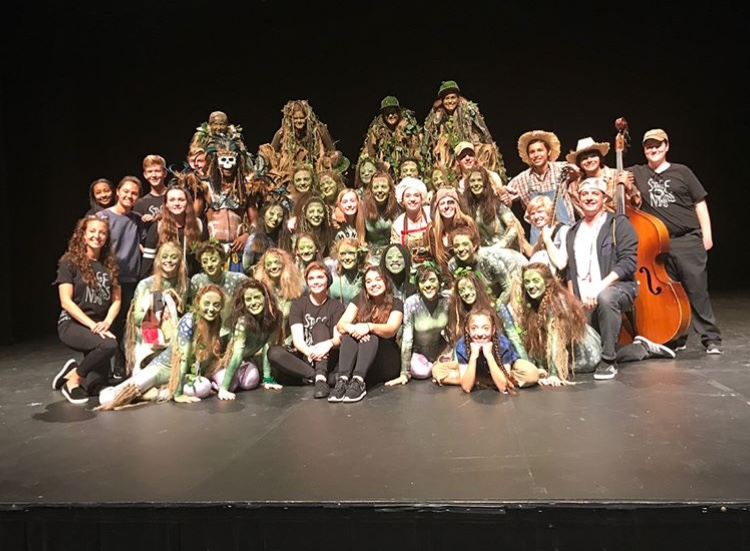
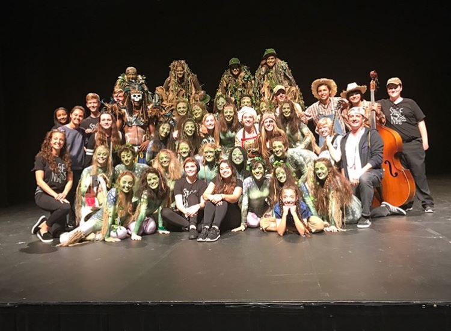

At my high school, Lake Norman Charter, we have a highly competitive theatre program. This program is called NCTC. We compete in regionals as well as states and have regionals 3 years in a row. During my freshman year, I joined the techinal team of the theatre program helping with costumes, set building, and props. It was extremely difficult becuase we had almost 3 times the number of cast members as there were technical members, aka techies. It has hard to make deadlines that we set for ourselves but we ended up finishing on time. At regionals we won many awards including "Outstanding in Ensemble" for our performance of 'Wiley and the Hairy Man' and "Exccellence in Technical Design in Construction" for out performance of 'Wiley and the Hairy Man' as well as our performance of a student written play called 'H-O-N-K'.


 

During my sophmore year at Lake Norman Charter I decided to do another year of theatre. This time we had a much larger technical team and cast. We still prepared to perform 2 plays but we had a much larger cast and crew. All of the previous crew memeber were able to choose which category of technical crew we would like to be a part of. I decided to choose costuming because it was where I was the most passionate about my work. The costume crew consisted of 5 members and one costume manager, who was a senior. We struggled a lot to keep up with the number of cast member when there were so few of us who knew the ins and outs of costume design. We met all of our deadlines and when we were at regionals we won the "Barbizon Excellence in Costume Design". We ended up only taking one play to states. At states we won another "Barbizon Excellence in Costume Design" as well as "Distinguished Play and Cast Your Vote" for our performance of 'Boy Meets Girl'.